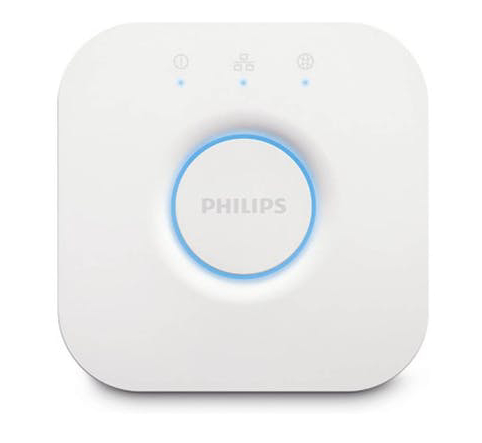

<!-- NG-ZORRO -->
<div style="display: flex;align-items: center;justify-content: center;height: 100%;width: 100%;">
  <!-- <a style="display: flex;align-items: center;">
    
  </a> -->
  <nz-card nzHoverable style="width: 450px;" [nzCover]="coverTemplate">
    <h3 [ngStyle]="{'margin': '16px 0' }">Lights</h3>
    <nz-list [nzDataSource]="lights" nzBordered nzSize="large"
            [nzRenderItem]="item">
      <ng-template #item let-item>
        <!-- <nz-list-item [nzContent]="item.name"></nz-list-item> -->
        <nz-list-item [nzContent]="item.name" [nzActions]="[bulbAction]">
              <!-- <ng-template #bulbAction><a (click)="edit(item)">edit</a></ng-template> -->
              <ng-template #bulbAction><nz-switch (ngModelChange)="onOff(item)" [ngModel]="item.state.on" nzCheckedChildren="On" nzUnCheckedChildren="Off"></nz-switch></ng-template>
              <ng-template #nzTitle>
                <a >{{item.name}}</a>
              </ng-template>
          </nz-list-item>
      </ng-template>
    </nz-list>
  </nz-card>
</div>